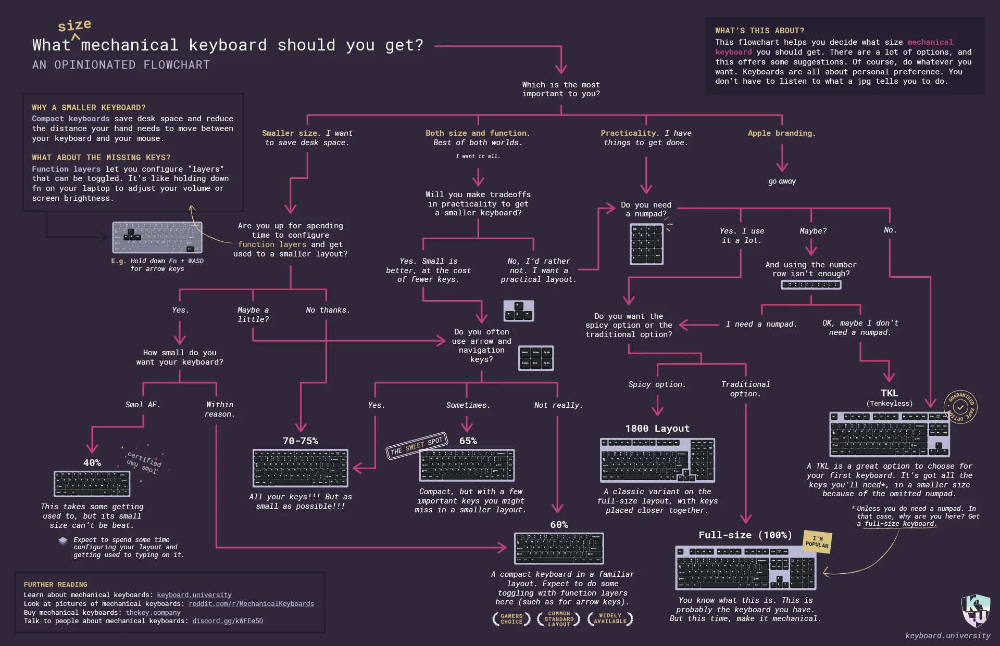

All about keyboards
The start of keyboards
The first ever ‘keyboards’ were typewriters, which were used for typing and printing text onto paper. The first ever attempts to create such writing machines date back to the early 19th century. In 1829, William Austin Burt patented a machine called the "Typographer," but it was slow and cumbersome. In 1868, Christopher Latham Sholes, along with Carlos Glidden and Samuel Soule, patented a typewriter that is often considered the first practical typewriter. This typewriter featured the QWERTY layout which is still being used to this day. Over the next few decades, more improvements were made to typewriters. This included the introduction of the shift key (for capital letters), backspace key, and other features to make typing more efficient.
The introduction of the modern keyboards
As the advent of electronics and computer, the keyboard evolved as well. At first, they were only found on teletype machines and were essentially still typewriters. Keyboards at this time were also commonly built into the computer itself. However, as personal computers became even more popular, keyboards started to evolve too. For instance, the QWERTY layout that was previously popular with typewriters became the standard for keyboards. The keyboard was also separated from the main unit and became a standalone peripheral device. The first standalone keyboard for personal computers was the IBM Model F, which was introduced in 1981. Eventually 3 years later, IBM released the Model M keyboard, which featured the now-standard 101-key layout. The Model M was known for its durability and tactile feedback, and it set the standard for future mechanical keyboards.
The modern keyboard
Nowadays, there is a wide selection of different keyboards to choose from. One of which is the membrane keyboard, which uses pressure pads and conductive traces to register keystrokes. This is one of the more popular keyboards in the world because it is cheaper compared to mechanical keyboards. As for mechanical keyboards, there had been a rise in the customisability of such keyboards. This includes the type of layout, the switches, the board material, etc. There are also more features modern mechanical keyboards offer such as RGB, Hot-Swap and even LED screens on the keyboard. Furthermore, there has an increase in the quality and affordability of keyboards, which means even having just $100 can buy you a good mechanical keyboard. Essentially, getting into the keyboard hobby has never been more affordable and exciting.
Time: 0s
Mistakes: 0
Result
Accuracy:
Speed:
The components of a keyboard may seem complicated, it is made of out only a few components. Many of these components, especially the switches and the keycaps, can be customised as much as the user wants. Using this interactable diagram, you can easily see what goes inside of a keyboard.
Casing
The casing is the bottom of the keyboard that houses all the internals of the keyboard. Many keyboards use different materials for the casing, such as plastic, aluminium and even wood. In fact, many keyboard enthusiasts pick a specific material for their keyboard builds in order to achieve the sound they want. If you are making a keyboard for the first time and want a specific sound for it, I highly suggest making sure you have the ideal keyboard case first.
Switches
Switches are simply the part of the keyboard that actually let you input keystrokes. This is easily the most customisable part of the keyboard (unless you are using a membrane keyboard), as mechanical switches have three different types. These are linear, tactile and clicky. There are even different variants of each type of switch that have different types of materials, springs, actuation point, etc that let you customise the feel and sound of each key press. However, while there are many options of switches to choose from, I feel that switches should not be a major priority if you want to have a specfic typing sound for a keyboard. I highly suggest getting a keyboard kit and then a switch tester to try on the keyboard kit.
Keycaps
Keycaps are of course what you are typing on the keyboard. They come in a variety of colours so you can choose which colour scheme you want. Keycaps also can have multiple different types of profiles meant for gaming and typing. Futhermore, they are made of different materials like ABS plastic, PBT plastic and even ceramic which can help you achieve your desired keyboard sound.
PCB
The PCB is the component responsible for collecting all the keyboard inputs and outputing them to your computer. There are two types of PCBs, soldered PCBs and hot-swap PCBs. Switches on soldered PCBs must be soldered on and off in order for the PCB to work, while switches on hot-swap PCBs can simply be taken out by hand. Make sure you know your PCB is hot-swappable as if you try and pull out a switch from a soldered PCB, you WILL break the solder on the PCB and that key will not register unless you can solder the switch back on.
Case Foam
Case foam is placed inside below the PCB and inside of the keyboard case. This usually helps with the sound of the keyboard by making the typing sound more deep and "thocky".
Plate
The plate is placed on top of the PCB and helps with aligning the switches properly. The plate can come in a variety of materials like polycarbonate, aluminium, brass and much more to customise your keyboard sound.
Now we get to the fun part, making your own custom keyboard. Before you start though, You should consider what size you want you keyboard to be. The keyboard market has grown significantly in the past few years, and you would be able to find many keyboards with different layouts to choose from. Use this image to help determine your desired keyboard layout.
Next we need the switches for our keyboard. However, you need to know in detail which switch type you want. Furthermore, there are multiple variants of the same switch type that can let you customise the typing sound. You can click on the switch images to show a diagram of how it works.
Linear switches
The first type of switch is the linear switch. These switches have a smooth keypress with no tactile bump. These switches are mainly used more for gaming since you will not have any resistance. While Cherry MX Red switches are primarily the most well known linear switches, there many more linear switches. Some of my favourites are the Hyacinth V2s and the HMX Xinhai, since they provide a near perfect keystroke while also helping to give that clacky keyboard sound.
Tactile switches
The second type of switch is the tactile switch. These switches have tactile bump during the keypress. These switches are mainly for typing, as the tactile bump can tell the user when they have actuated a key. Furthermore, tactile switches have many types of tactile bumps, such as light tactile bumps and P-shaped tactile bumps. For instance, the Cherry MX brown switch has a light tactile bump in which the user has to press down a certain length to feel the tactile bump. Personally, my favourite tactile switch is the Haimu Benevolence, since it has a sharp P-shaped tactile bump to tell me I have definitely pressed a key.
Clicky switches
The last type of switch of the clicky switch. These simply make an audible click
sound when pressed and have a tactile bump like tactile switches.
A lot of gaming peripheral companies like putting clicky switches into their
keyboards for some reason. While these switches can also be used for typing since
they also have a tactile bump, the bump on switches like the Cherry MX Blues are not
very noticable.
Also, many people in the keyboard community have moved away from the clicky sounds
that clicky switches make and have instead opted for linear and tactile switches
instead.
they make. However, if you really want to have clicky switches in your keyboard
in which case a certain gamer will rush to your house with a fire axe,
you can get Kailh clicky switches like the Box Jades and Box Navies that have a more
noticable bump.